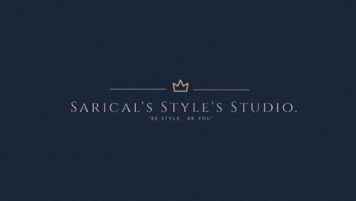

Site Purpose
The challenge in selling a clothing line is that you have to maintain your artistic vision while also trying to include designs that are trendy, popular and appealing.
Target Audience
Have you ever had difficulty obtaining or locating new clothing? and you've chosen to look for a new one? And what style ideas work best for you? Don't worry, my website will assist you in finding the best for you. There are many suggestions and ideas on how to look nice in your clothing, whether fashionable or not, and some of the items are inexpensive. What kind of outfit do you like?
Logo
Site Map and Content
The majority of businesses have a fascinating backstory, even if the bottom line is that they were founded just to make more money. Rather than picking a style at random, consider what you want to bring to what's currently out there: luxury, quality, low-cost alternatives, more sizes, or even an entirely new style. It's worth thinking about to create a foundation for my brand that will also act as a guide in the future as well for the customer.
Color Scheme

Typography
Monospace and san-serif for headings,list and paragraphs
Site Name
" Be Style , Be you" sarical's Style's Studio.